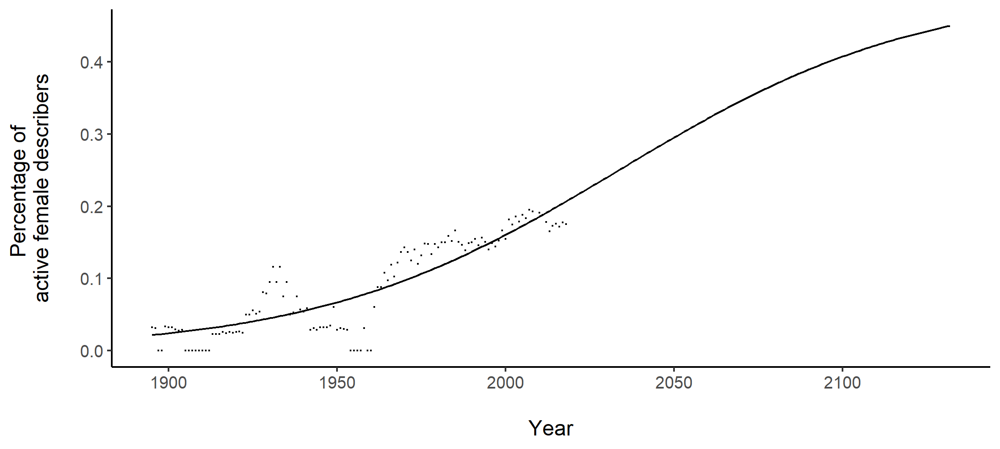

Bzz... Hey there! This is best viewed on a desktop.
Why is bee taxonomy important
Taxonomy is the science of describing and identifying species. Without which, it could be difficult to put a name to an agricultural pest or disease-bearing mosquito vector – clearly these have important implications! Bees are arguably the world’s most important pollinator group, crucial to food security and ecosystem stability. In recent times, there have been reports on insect declines in some parts of the world, whether this is true globally for the bee pollinators has yet to be ascertained, due to the lack of credible data of species over time. Furthermore, many insect species have not yet been discovered but are yet are under threat from change and habitat loss; the race is on to discover as many species as possible before they disappear.
One important taxonomic initiative led by John S. Ascher is databasing and georeferencing of bee types specimens. Georeferencing is the process of assigning a latitude and longitude to each type locality. The type locality is where the type specimen is found, and the type specimen is assigned to each scientific name when a species is formally named. Here is a map of the unique type localities for bees over time. It gives us an idea of where species were discovered over time. The earliest bee species were described by the Swede Carl Linnaeus, also known as the father of taxonomy in 1758. Among these was the Western Honeybee (Apis mellifera), perhaps the most well-known of all honey bees due their use for the production of honey.
Unique localities of georeferenced bees over time
Is bee taxonomic effort decreasing?
Though taxonomy plays an important role as a foundational science, it is increasingly perceived as unimportant, as seen by budget cuts and even the reduction of prestige and available positions. Here, bee taxonomic effort is quantified to ascertain if this sentiment is indeed true.
Yet, there appears to be an increasing number of Persons with Taxonomic Expertise (PTEs) through time. Similar to findings in other research, there is an increasing number of PTEs for the bees, as well as for biodiversity in general. This bucks the expected trend. What could be a potential explanation for this unexpected trend?

Are number of people with taxonomic expertise (=taxonomic effort?) increasing?
While the number of Persons with Taxonomic Expertise (PTEs) are rising with time, each PTE may be overall less productive, describing fewer species in general, parallel to findings in a prior study. To quantify this, each PTE was weighted by the mean number of species described throughout their career. A different trend for taxonomic effort was observed: an increasing-decreasing-increasing trend over time. However, again, this bucks the expectation that taxonomy is in decline in recent decades, as the PTEs were still increasing post World War II, and the declines were only observed between the start of World War I and end of World War II (1914 and 1945). This suggests that bee taxonomy is not declining today but these could be the effects of policies from yesteryears – yet the budget cuts of today would most certainly have a lagged but pronounced effects in the future.
Are number of people with taxonomic expertise (=taxonomic effort?) increasing?
There are a couple of reasons why Persons with Taxonomic Effort (PTEs) may be less productive overall with time. This could be increased effort needed to look through type specimens scattered over different repositories, increased quality of taxonomic descriptions, rise of part-time taxonomists. To explore the last reason, the proportion of part-time PTEs, defined as the those who described less than or equal to one to ten species throughout their career, was plotted through time. It is apparent there is an increasing trend for part-time PTEs, for one to ten species. We may guess that the rise of part-time PTEs is may then be related to the budget cuts which in turn encourage potential taxonomists to diversify into other related fields, such as phylogenetics and ecology. If this is so, it may bode a worrying trend for taxonomy as there are fewer full-time taxonomic experts around.
Methods
A Person with Taxonomic Expertise (PTE) was defined as an individual who described at least one species (valid or synonym) as a first author in publications with one or more than two authors, or is an author in publications with only two authors (n=689).
To capture active period of PTEs, the minimum and maximum publication dates for each author were used with all descriptions (n=33,837). Two metrics of taxonomic effort were tabulated by year: (i) the number of active PTEs, and (ii) the number of active PTEs weighted by the mean number of species described per year for each PTE, that is, the mean number of species described by each active PTE per year was summed for the active authors in that year, to account for the different “productivity” unique to each author. The latter metric termed as “number of active PTEs (weighted)” here.
To explore the rise of part-time PTEs over time, the PTEs were segregated by the total number of species described during their active years and the proportion of PTEs describing a range of one to ten species during their active years was tabulated.
How many more bee species to be described over the next 10 years?
In the second chapter, the Bayesian hierarchical time series model accounting for taxonomic effort and imperfect detection shows that Afrotropics, Australasia, Palearctic, and Neotropics biogeographic realms have an increasing trajectory for bee description, suggesting these should be areas of foci of description.
Species description curves have been used in conjunction with taxonomic effort to decipher if the species inventory is nearly complete. For the bees, high-quality georeferenced type specimens enabled the plotting of species description curves by biogeographic realms. The Palearctic and Neotropics have the highest number of species, while Oceania and Indomalaya regions have the lowest number of species. To make predictions of the next 10 years (red lines), a probabilistic model was fitted to these species description curves. Assuming no decline in taxonomic effort, there are approximately 2,600 new bee species in the next 10 years, with the most number of species from the Neotropics (~1,500 species).
Yet it is also not enough to look at the number of species alone to understand which regions have a greater potential for species discovery. To do so, the slope of the regression, also known as rate of change of description, was determined. Areas with significantly positive slope included Afrotropics, Neotropics and Palearctic. These biogeographic realms are on a positive trajectory for species discovery, and could be areas of foci for sampling and increased taxonomic effort.
Methods
To delineate biogeographic regions, the WWF Terrestrial Ecoregions of the World for boundaries of the biogeographic realms, excluding Antarctica, was used. Bayesian hierarchical model was used, with the response variable as the number of species described per year by biogeographic realm and was offset by the number of publications to account for taxonomic effort. The model was a zero-inflated autoregressive Poisson regression to account for imperfect detection. The statistical modelling approach is similar to this study.
Who are the people with bee taxonomic expertise?
Diversity is important for the representation of different ideas and perspectives who come to the table with a variety of solutions to a problem. Thus it is part of Environmental, Social and Governance (ESG), coined to measure the sustainability and societal impact of entities. More importantly, for bee taxonomy, spatial representation of bee describers, in terms of resident describers, could be key to promote interest in natural history and biodiversity.
However, most bee describers come from Europe and North America as well as high income countries and few come from Africa (17), Oceania (2) and Australia (14). It is a known trend also for other taxa, such as the amphibians. This potentially poses as a problem; resident describers describe up to 38.7% of the bee species in their country though the median percentage is 1.9%. Countries without resident describers may not be able adequately discover or inventory the bee biodiversity within the country, which is important for conservation and biodiversity policies.
To investigate this, a model with factors determining the presence of taxonomic flow between countries was used.
Factors as history, geographic proximity, socioeconomic status were significant. There is however is an asymmetry in flow: Asia, Africa and Oceania were not as likely to receive taxonomic flow from countries in continents with these taxonomic resources, namely Europe and North America. This suggests that more taxonomic flow, when in line with the Nagoya protocol, as well as local capacity building in these regions should be encouraged.
† Intercept refers to the baseline of different continent, not colonised, not adjacent, flow class type equal, and continent of donor country Africa and continent of recipient country Africa.
Collaboration is key in scientific research. There is an increasing trend of bee co-authorship through time though only 5.9% of described species have co-authors. One of the ways to determine the extent of collaboration may be seen in co-authorship networks here and here.
The bee describer co-authorship network is constructed here. Most describers are interconnected: majority of describers are in one international main network with a few large international modules and smaller modules structured by geography. This suggests that for describers who co-author, the bee network is generally well-connected and international.
The peripheral networks (outside of the main network) may be present for historical reasons due to the lack of telecommunications and travel in the past, cultural reasons (e.g., Indian describers form many isolated networks) or may also be new research groups which have yet to collaborate with the main network.
You can explore the network on your own by clicking on the legend and may notice some trends! Two notable taxonomists are highlighted below.
Jesus Santiago Moure
Jesus Santiago Moure (2 Nov 1912 to 10 Jul 2010) was a Brazilian taxonomist specialising in bees. He worked largely with Brazilian taxonomists, and some from United States. He studied in a seminary at Rio Claro from 1929 to 1932. From 1933 to 1936, he received his degree in theology in Curitiba, during which his interest in insects began. Source: here
Charles Duncan Michener
Charles Duncan Michener (22 Sep 1918 to 1 Nov 2015) was a well-connected American bee expert who worked with bee describers from varied countries. He wrote the seminal bee taxonomic guide "The Bees of the World" published in 2000. At the age of 16, he wrote his first peer-reviewed publication. Later, he received his bachelors in 1939 and his PhD in entomology in 1941 from the University of California, Berkeley. Source: here
Together these suggest that there is more avenue for collaboration through co-authorship for bee taxonomists, and for those who co-author, the modern world has allowed for collaboration that transcends boundaries.
Finally, gender representation is a frequently discussed issue in the 21st century. Thus, the percentage of active female describers over time was explored. The graph shows increasing female representation with time but is not near parity and hovered around 20% in the 21st century. When extrapolated, parity is expected to be reached in the year 2132. The percentage of publications authored by females in most other STEM disciplines are also not likely to reach parity by the end of this century.
Methods
Taxonomic flow
To determine the presence of taxonomic flow, a logistic regression was used. Explanatory variables were created using ancillary datasets from “World Continents” [Esri Data & Maps], “GADM country boundaries” [version 3.6; GADM], “Colonial history from issue Correlates of War” (ICOW) Project [version 1.1], “Socioeconomic status for 2019” [World Bank]. Country codes were used from Statoids, using the international standard ISO 3166-1.
Co-author network
For the bee network, each node was a describer who co-authored. If two describers had collaborated together on a species description, they formed an edge that was weighted by the number of species (valid species or synonym) they co-authored together. For each sub-network, the number of describers and the number of countries represented by describers were tabulated to determine the extent of internationalization. Regions within the main sub-network with greater connectivity (“modules”) are parts of the network where the density of edges is high within but low outside.
Gender representation
The percentage of active female describers over time were tabulated. To model the year in which parity would be reached, a logistic function was fitted to the proportion of active female describers by year. Methods were similar to this study here.
The end
Data source: bee type species database provided by John S. Ascher
Content, analysis and visualisation: Eunice Soh with inputs from John S. Ascher and Roman Carrasco